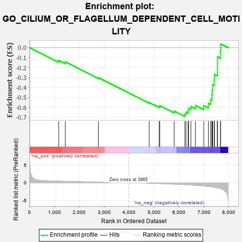

| | | Dataset | 7d |
| Phenotype | NoPhenotypeAvailable |
| Upregulated in class | na_neg |
| GeneSet | GO_CILIUM_OR_FLAGELLUM_DEPENDENT_CELL_MOTILITY |
| Enrichment Score (ES) | -0.6912528 |
| Normalized Enrichment Score (NES) | -1.8100247 |
| Nominal p-value | 0.0 |
| FDR q-value | 0.013430563 |
| FWER p-Value | 0.365 |
Table: GSEA Results Summary

Fig 1: Enrichment plot: GO_CILIUM_OR_FLAGELLUM_DEPENDENT_CELL_MOTILITY
Profile of the Running ES Score & Positions of GeneSet Members on the Rank Ordered List
| PROBE | GENE SYMBOL | GENE_TITLE | RANK IN GENE LIST | RANK METRIC SCORE | RUNNING ES | CORE ENRICHMENT | | 1 | RFX3 | | | 1171 | 0.451 | -0.1276 | No |
| 2 | DDX4 | | | 1436 | 0.403 | -0.1432 | No |
| 3 | TTLL1 | | | 2764 | 0.189 | -0.3019 | No |
| 4 | TPPP2 | | | 4800 | -0.157 | -0.5511 | No |
| 5 | ASH1L | | | 5203 | -0.248 | -0.5909 | No |
| 6 | TMF1 | | | 5225 | -0.251 | -0.5825 | No |
| 7 | BBS4 | | | 5806 | -0.407 | -0.6376 | No |
| 8 | RGN | | | 6233 | -0.547 | -0.6673 | Yes |
| 9 | DRC1 | | | 6278 | -0.565 | -0.6480 | Yes |
| 10 | ARMC2 | | | 6363 | -0.602 | -0.6322 | Yes |
| 11 | BBS2 | | | 6383 | -0.608 | -0.6080 | Yes |
| 12 | CELF3 | | | 6475 | -0.651 | -0.5909 | Yes |
| 13 | TTLL9 | | | 6657 | -0.743 | -0.5811 | Yes |
| 14 | NPHP4 | | | 6991 | -0.931 | -0.5823 | Yes |
| 15 | TEKT2 | | | 7177 | -1.053 | -0.5594 | Yes |
| 16 | RSPH9 | | | 7265 | -1.137 | -0.5205 | Yes |
| 17 | EFHC1 | | | 7317 | -1.193 | -0.4746 | Yes |
| 18 | EFHC2 | | | 7326 | -1.199 | -0.4231 | Yes |
| 19 | TEKT1 | | | 7349 | -1.220 | -0.3724 | Yes |
| 20 | WDR63 | | | 7411 | -1.276 | -0.3241 | Yes |
| 21 | SPEF2 | | | 7418 | -1.289 | -0.2684 | Yes |
| 22 | TEKT4 | | | 7539 | -1.455 | -0.2198 | Yes |
| 23 | GAS8 | | | 7540 | -1.455 | -0.1560 | Yes |
| 24 | IQCG | | | 7541 | -1.455 | -0.0922 | Yes |
| 25 | TEKT3 | | | 7658 | -1.657 | -0.0342 | Yes |
| 26 | DRC7 | | | 7667 | -1.676 | 0.0383 | Yes |
Table: GSEA details [plain text format]
 Fig 2: GO_CILIUM_OR_FLAGELLUM_DEPENDENT_CELL_MOTILITY: Random ES distribution
Fig 2: GO_CILIUM_OR_FLAGELLUM_DEPENDENT_CELL_MOTILITY: Random ES distribution
Gene set null distribution of ES for GO_CILIUM_OR_FLAGELLUM_DEPENDENT_CELL_MOTILITY